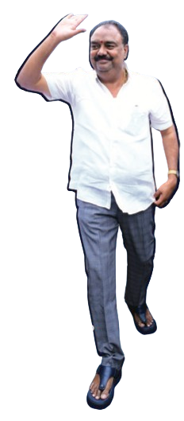
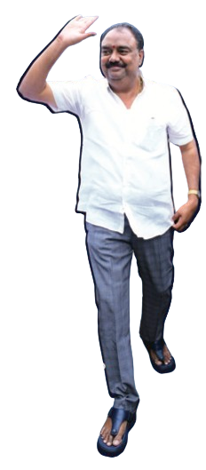

Hon. Leader - Official Portrait
Hon. Leader addressing the nation
Dedicated service since 2008
Legislative initiatives for progress
Through various welfare programs
Based on recent surveys
"True leadership is not about holding power, but about empowering others to reach their fullest potential. Every decision I make is guided by one simple question: How will this serve the people better?"- Hon. Leader Name
Early Life & Education
Born in 1975 in a humble farming family in rural Telangana, Hon. Leader Name's journey began in the dusty lanes of a small village where electricity was a luxury and education a distant dream for most children. Growing up as the eldest of four siblings, they witnessed firsthand the struggles of rural life - from crop failures that left families in debt to the lack of basic healthcare that claimed young lives.
Despite financial constraints, their parents prioritized education, believing it to be the only path to a better future. Walking 8 kilometers daily to the nearest school, the future leader excelled in academics while helping with farm work in the evenings. This early exposure to both books and fields shaped a unique perspective that would later influence their policy decisions.
Earning a scholarship to pursue higher education, they completed a Bachelor's degree in Political Science from Osmania University, followed by a Master's in Public Administration from Jawaharlal Nehru University. During these formative years in Delhi, they were exposed to the complexities of governance and the stark contrast between policy formulation and ground-level implementation.
Entry into Public Service
The transition from academia to activism was sparked by a personal tragedy. In 2007, a severe drought hit their home district, and the leader's own uncle, a marginal farmer, took his life unable to bear the burden of debt. This incident became a turning point, igniting a passion for systemic change that would define their entire career.
Starting as a volunteer with local NGOs, they organized relief camps during natural disasters and initiated adult literacy programs in remote villages. Their approach was always hands-on - from teaching children under trees when schools lacked infrastructure to setting up temporary medical camps during health emergencies.
The grassroots work soon caught the attention of senior political leaders who recognized the genuine commitment and innovative solutions being implemented at the village level. In 2008, they were formally invited to join active politics, marking the beginning of a remarkable journey in public service.
Political Career & Achievements
The electoral debut came in 2014 when they contested for the State Assembly from their home constituency. Running on a platform of transparent governance and inclusive development, they won by a margin that surprised even seasoned political observers. The victory was attributed to their deep connect with the grassroots and a campaign that focused on real issues rather than rhetoric.
As a first-time MLA, they introduced several innovative initiatives including 'Open Door Fridays' where any constituent could meet without appointment, digital transparency in constituency development funds, and the revolutionary 'Village Parliament' system that involved communities in decision-making processes.
The success at the state level led to national recognition, and in 2019, they were elected to the Lok Sabha. In Parliament, they have been instrumental in passing legislation related to rural healthcare, digital literacy, and women's economic empowerment. Their maiden speech in Parliament, focusing on the digital divide and its impact on rural India, was widely praised across party lines.
Key Milestones
Started grassroots activism
Joined local NGOs and initiated community development programs following personal tragedy during drought
First elected to State Assembly
Won constituency election with record margin, introducing transparent governance and innovative public service methods
Elected to Parliament
Advanced to national politics, becoming voice for rural development and digital inclusion in Lok Sabha
Re-elected with record margin
Achieved unprecedented electoral success based on performance-driven governance and community impact